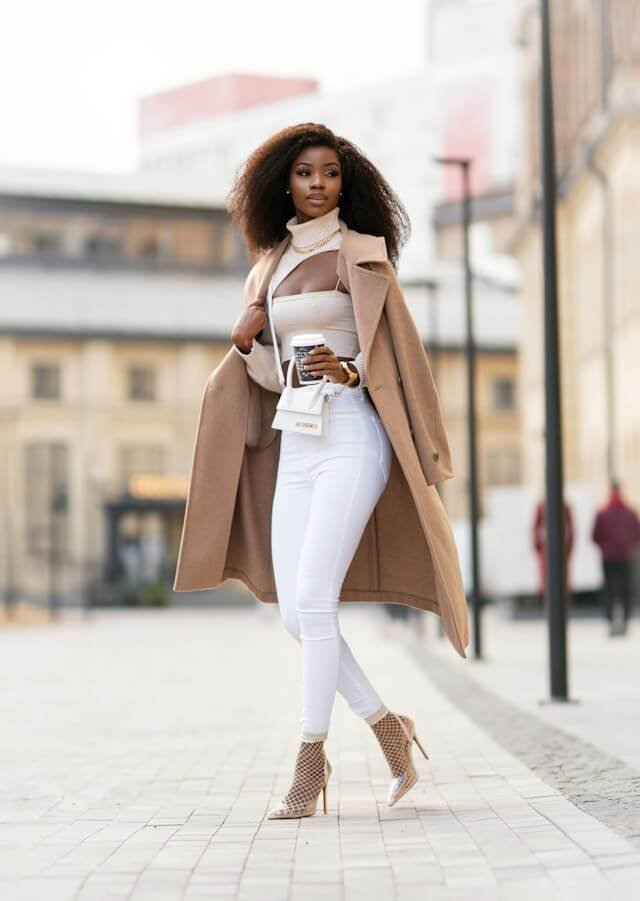
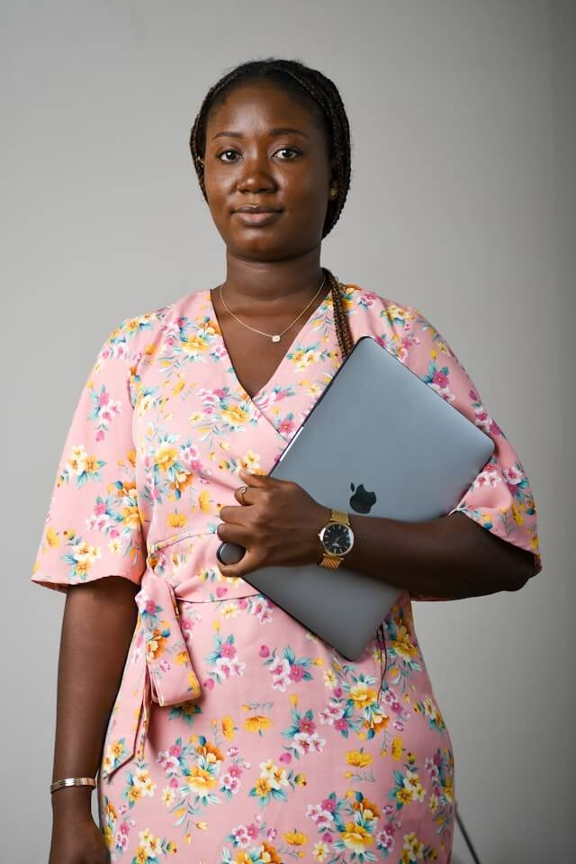
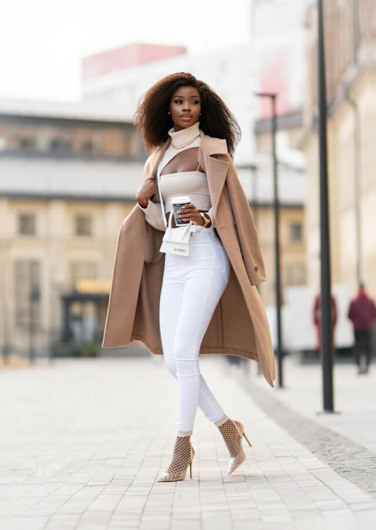
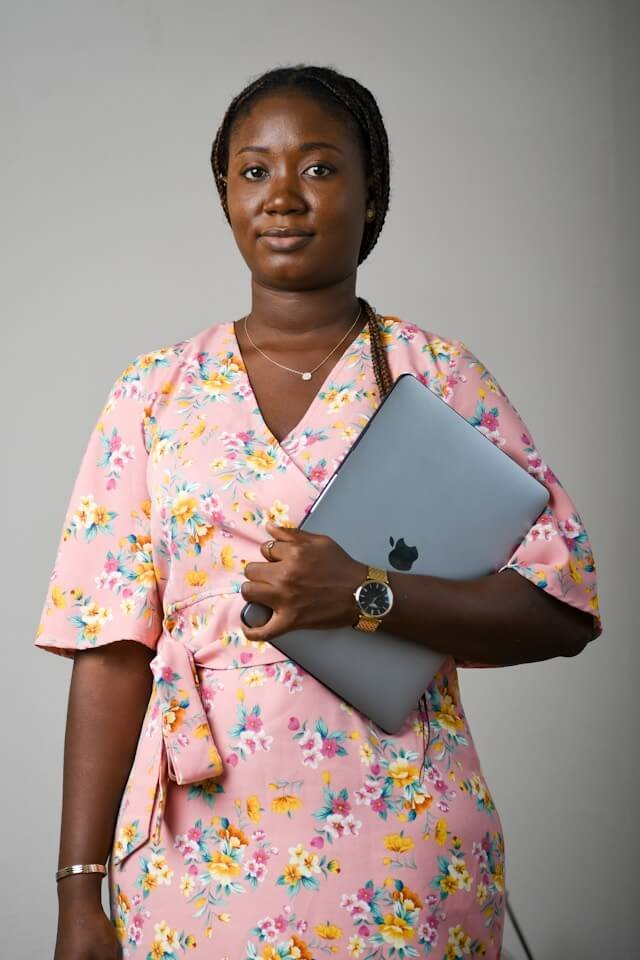
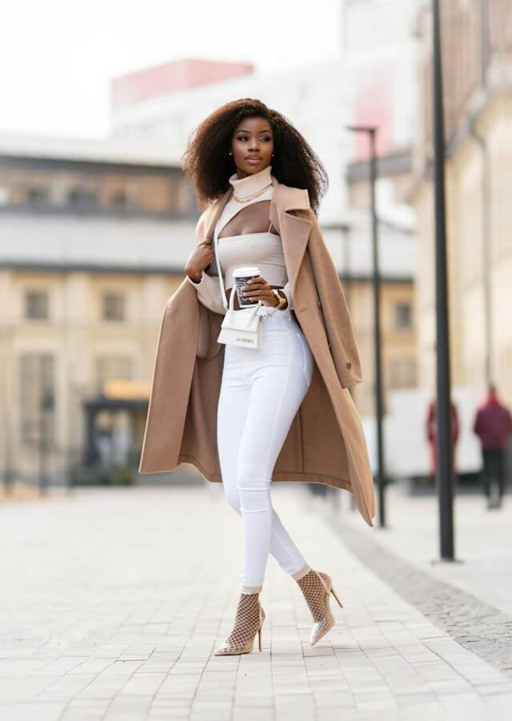
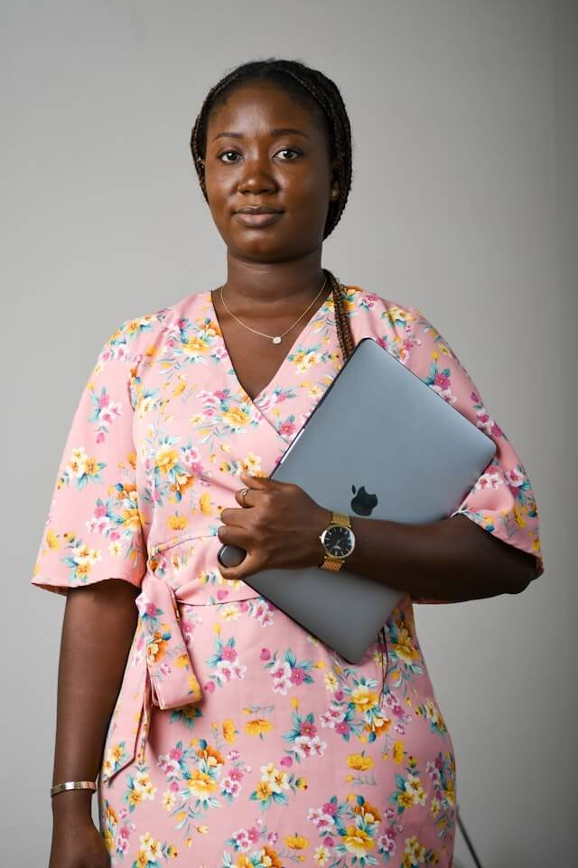
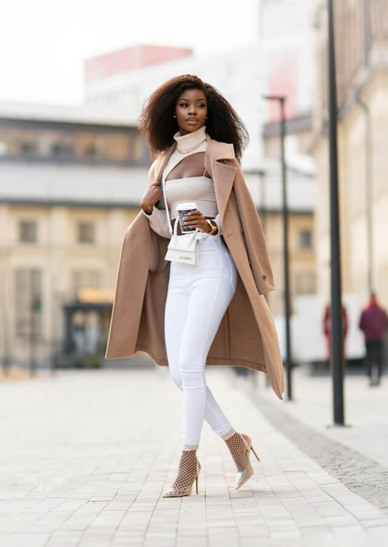
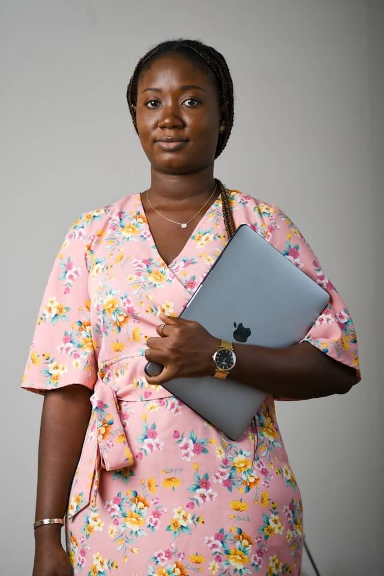

The Black Female Founders Hub was born from a powerful desire to change the narrative. We saw a world where women of colour, especially Black women, faced a lack of representation and resources in entrepreneurship. Fuelled by this passion, what started as a small idea blossomed into a vibrant community.
The Hub is more than just a community, it is a thriving ecosystem overflowing with resources, mentorship, and opportunities. We understand the unique challenges and aspirations of Black women entrepreneurs. That is why we are here to provide the tools, connections, and support you need to turn your dreams into reality. Whether you are just starting out or ready to take your business to the next level, the Hub is your one-stop shop for encouragement, collaboration, and success.
To empower Black Female Founders by providing a comprehensive ecosystem that supports their entrepreneurial journey from ideation to scale. At BFFH, we connect these visionary women with essential resources, mentorship, and networks.
By focusing on critical industries such as Technology, Finance, Innovation & Science, Fashion, and Media, we are dedicated to building a foundation where every founder is equipped to turn challenges into stepping stones.
We embrace a diverse age range and educational background, ensuring every Black woman, from young vibrant females to seasoned entrepreneurs, can access tailored programs that propel their businesses forward.
To become the leading hub for Black Female Entrepreneurs across the globe transforming the landscape of innovation and entrepreneurship. Our vision is a world where Black Female Founders are universally recognised as pivotal drivers of sectorial advancement and economic growth.
Through BFFH, we envision creating a nurturing, safe, and conducive environment that not only fosters the development of groundbreaking enterprises but also ensures these founders become influential leaders who shape the future of global industries.
We understand the unique challenges faced by Black Female Entrepreneurs in the startup ecosystem. The Black Female Founders Hub was created specifically to address those gaps, and the community goes beyond the limitations of mainstream resources.|
Our unwavering belief lies in the limitless potential of Black Female Entrepreneurs. We are passionate about empowering them and becoming a powerful force driving their success.
The Founder
Fadé's career is a vibrant tapestry of technological innovation and corporate expertise. As a seasoned entrepreneur, she has made substantial strides in both startup ecosystems and established corporations. Notably, she played key roles at Interswitch Group, Service Works Global, Smartr365, Reply, and Kroll. Her entrepreneurial spirit is further highlighted by her co-founding of Techlerator, a startup that exemplifies her vision and drive
An active member of Open Banking Nigeria, Fade has been at the forefront of financial technology advancements, influencing policies and frameworks that drive innovation. Her commitment extends beyond her professional roles, as she is also a passionate mentor at the Consultants Hub, where she guides emerging consultants and entrepreneurs.
Fadé's expertise in business strategies showcases her ability to merge industry knowledge with practical applications, making her a formidable force in the tech world. Her career is a beacon for aspiring professionals and entrepreneurs, illustrating the profound impact of dedication, strategic thinking, and a commitment to innovation
The Black Female Founders Hub is not just a community, it is a Growth ecosystem.
It is a dynamic hub overflowing with resources, mentorship, and opportunities. We understand the unique challenges and aspirations of Black Female Entrepreneurs.
That is why we offer everything you need to thrive, from practical tools to supportive guidance.
Black
Feminine
Future
Hub
The Hub is more than just a community, it’s a dynamic ecosystem of resources, mentorship, and opportunity tailored specifically to the unique challenges and ambitions of Black Women Female Founders
Premium Articles
Community Feeds
Premium Courses
© 2024 Black Female Founder's Hub. All Rights Rserved
Built with 💖 by RixelPro Creative